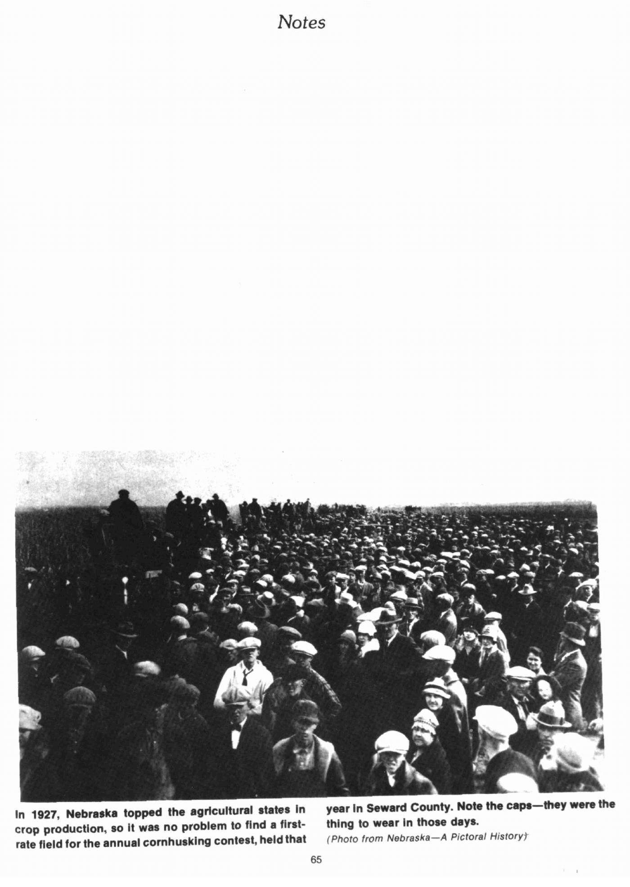

The book · Back matter
Page 65 Notes


Transcription
Notes

Transcriber’s notes
End-matter 'Notes' page: italic serif heading 'Notes' at top, the upper half left blank for the reader's notes, then a stock historical photo (not a Kastl family photo) with a two-column bold caption plus an italic source credit. Credit spells 'Pictoral' (sic, as printed) and ends with ')' followed by a stray mark. Printed page 65; page 64 is not present as a numbered scan (s066 is a blank scan between p.63 and p.65).